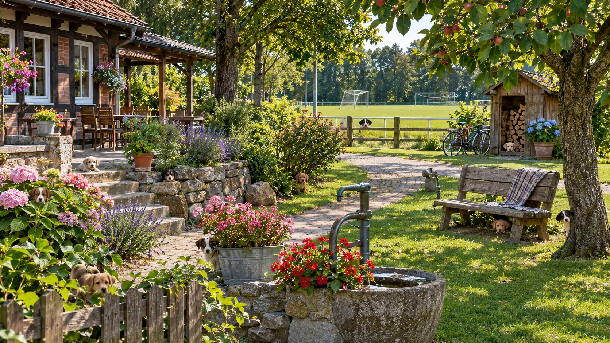

Deine Aufgabe: Auf diesem Bild haben sich zehn Hundewelpen versteckt. Sieh genau hin und tippe jeden gefundenen Welpen direkt im Bild an. Gefundene Welpen werden gelb markiert.
Tipp: Einige Welpen schauen nur mit dem Kopf hervor. Du kannst das Bild vergrößern und verschieben.
🐶 0 von 10 gefunden⏱ 00:00🔎 100 %

Starte das Spiel und suche die zehn Welpen.
Die Hilfefunktion zeigt dir kurz den Bereich eines noch nicht gefundenen Welpen. Sie zählt den Welpen nicht automatisch.